I want to be explicit about what Blastwall defends, what it assumes, and where it can be attacked. If I am going to argue that automation should start constrained, I should also say where the constraints stop working.
1. Purpose and Scope
What I Am Trying To Protect
Blastwall confines privileged automation identities on managed RHEL hosts. It maps them into a restricted SELinux user (blastwall_u) that denies access to known exploit surfaces. The confinement lifecycle (policy authoring, RPM packaging, deployment, verification, IdM marker, AAP preflight) is built to ship exploit surface denials faster than kernel patches move through the fleet.
That is the scope. I am not trying to solve all of host security. I am trying to make sure that when my automation lands on a managed host, the session starts inside a boundary that blocks known-dangerous surfaces.
What I Am Not Trying To Protect
- Human operator sessions. Blastwall applies only to automation identities mapped into
blastwall_uvia IdM SELinux user maps. If you log in as yourself, you are not affected. - Container or VM workloads. The confinement operates at the SSH login layer via
pam_selinux. It has nothing to say about container runtimes, pod security, or hypervisor-level isolation. - Non-RHEL systems. The model depends on SELinux targeted policy, IdM/FreeIPA, and SSSD. It is not portable.
- AAP controller infrastructure. The controller is a trusted component. Securing it is a separate problem.
- IdM/FreeIPA infrastructure. IdM is the policy system of record. If IdM is compromised, Blastwall cannot help.
Relationship to Other Mitigations
Blastwall does not replace kernel patches or BPF LSM mitigations like block-copyfail. Kernel patches fix the vulnerability. BPF LSM blocks the exact exploit argument. Blastwall reduces the blast radius for automation identities while those other mitigations are still moving through the fleet.
I think of them as three layers, not three alternatives.
2. Threat Landscape
I made the high-level argument in Why This Matters Now: AI-accelerated vulnerability research is compressing the timeline between discovery and weaponization, and unconfined automation is the blast radius amplifier. Here I want to break down why that matters structurally.
Why I Treat Automation As A Harder Problem Than Operator Compromise
When an operator gets compromised, the blast radius is bounded by what that one person was doing at the time. One session, one host, one set of open connections. It is bad, but it is containable.
The reason I treat automation differently is that it breaks all three of those bounds at once:
- Reach. A single automation identity typically has HBAC access to tens, hundreds, or thousands of hosts. Compromising that identity does not give the attacker one target. It gives them a target list.
- Speed. Automation moves at machine speed with no human decision-making in the loop. An attacker who can inject into that execution path inherits the same speed.
- Privilege assumption. Automation identities are often configured with broad sudo access because the alternative is per-task privilege scoping, which most teams never finish. The practical result is that automation lands as root with few constraints.
Those three properties together are what turn a single kernel exploit into fleet-wide lateral movement. That is the failure mode I built Blastwall to prevent.
Why The Patch Cycle Is Not Fast Enough
The reason I do not rely on patching alone is timing. A kernel vulnerability goes through discovery, disclosure, patch development, distribution packaging, staged rollout, and production deployment. In most enterprises that takes weeks to months.
During that entire window, every unconfined automation identity on every unpatched host is exposed. The exploit surface is live, the automation has access, and the only thing between the attacker and lateral movement is whether they have found the vulnerability yet.
AI-accelerated vulnerability research changes that side of the equation. The volume of discoverable kernel exploit surfaces will increase faster than patch cycles can absorb them. I built Blastwall around the assumption that confinement must be in place before the CVE number is assigned, not after. If I wait for the patch, I am defending a window that is already open.
What This Means For Confinement
So I cannot be reactive. I cannot wait for a specific CVE and then build a specific deny rule. I need automation identities to start inside a boundary that blocks broad classes of dangerous surfaces by default, and I need the lifecycle to add new deny scopes faster than kernel patches move through the fleet.
That is the design constraint behind Blastwall's architecture: versioned policy RPMs, IdM-visible coverage markers, and AAP preflight gates that fail closed when the required coverage is not present.
3. Adversary Model
Who I Am Defending Against
A remote attacker who has obtained or developed a weaponized kernel exploit targeting a surface reachable from automation sessions. The attacker's goal is lateral movement: use the automation identity's access, speed, and host reach to compromise the fleet.
What I Assume The Attacker Can Do
- Discover and weaponize kernel vulnerabilities, potentially using AI-accelerated research tools
- Reach hosts that automation identities have access to (directly or through an initial foothold)
- Chain exploits if the initial surface (e.g., AF_ALG socket creation) is available from the automation session
- Observe public information about the target's automation architecture
What I Do Not Assume
- Compromise of IdM/FreeIPA (trusted infrastructure)
- Compromise of the AAP controller (trusted infrastructure)
- Compromise of kernel integrity on the managed host (SELinux enforcement depends on a non-compromised kernel)
- Physical access to managed hosts
- Supply chain compromise of the RPM build or delivery pipeline
If any of these are violated, the attacker is operating outside the boundaries I designed Blastwall to defend. Each represents a separate security domain with its own controls.
4. Trust Boundaries

Boundary Descriptions
- AAP controller. Trusted. Runs preflight validation before dispatching jobs. If compromised, the attacker can bypass preflight, but SELinux enforcement on managed hosts is independent and remains intact.
- IdM/FreeIPA. Trusted. Authoritative source for identity mapping, HBAC rules, SELinux user maps, and sudo policy. Blastwall reads this state; it does not independently verify it.
- Network transport. SSH with Kerberos authentication. The trust boundary is at the managed host's
pam_selinuxresolution, not at the network layer. - Managed host kernel. Trusted. SELinux enforcement is a kernel function. If the kernel is compromised, the attacker can disable or bypass SELinux policy. That is the fundamental assumption that bounds all SELinux-based confinement.
- Automation session. Untrusted. This is the subject I am confining. The session runs as
blastwall_u:blastwall_r:blastwall_twith deny rules stripping access to specified exploit surfaces.
5. Assumptions
Every one of these must hold for the confinement to work. If any assumption is violated, the corresponding attack path in Section 6 becomes viable.
| # | Assumption | If Violated |
|---|---|---|
| A-1 | SELinux is in enforcing mode on managed hosts | Policy becomes audit-only; no enforcement (AP-1) |
| A-2 | The managed host kernel is not compromised | Attacker can disable SELinux entirely (AP-1) |
| A-3 | IdM/FreeIPA is authoritative and secured independently | Attacker can modify identity mappings, HBAC, sudo (AP-3, AP-5) |
| A-4 | SSSD correctly applies SELinux user maps at login | Session may land in wrong SELinux context (AP-4) |
| A-5 | RPM delivery chain has integrity | Attacker can ship policy that removes deny rules |
| A-6 | Sudo rules are reviewed before expansion | Confinement erodes through operational convenience (AP-2) |
| A-7 | AAP controller is secured independently | Attacker can bypass preflight and SSH directly (AP-5) |
6. Attack Paths
AP-1: Kernel Privilege Escalation
An attacker with code execution inside blastwall_t exploits a kernel vulnerability to escape SELinux confinement entirely.
| Preconditions | A kernel privilege escalation vulnerability exists and is reachable from the confined domain. |
| Impact | Complete bypass of all Blastwall controls. |
| Mitigation | None within Blastwall. Fundamental SELinux limitation. Kernel patching and defense-in-depth (seccomp, BPF LSM, hardware isolation) are the appropriate mitigations. |
| Residual risk | Accepted. If the attacker already has a kernel escape, my assumptions are violated and I am in a different fight. |
AP-2: Sudo Expansion Granting Policy Modification
An automation team expands the sudo command allowlist to include semodule, semanage, or write access to /etc/selinux/. The blastwall_t domain can then modify or remove its own confinement policy.
This is the attack path I worry about most. Not because it requires a sophisticated attacker, but because it happens through ordinary operational pressure. Someone needs broader sudo access for a legitimate task, the allowlist grows, and one day it includes semodule.
| Preconditions | Sudo rule expanded without security review of SELinux implications. |
| Impact | Automation identity can remove deny rules, disabling enforcement. |
| Mitigation | Preflight audits sudo rule for unconfined_r/unconfined_t leakage. The self-protection policy denies direct policy-management execution and policy-store writes from blastwall_t. |
| Residual risk | Moderate. Direct policy manipulation is blocked locally, but indirect sudo escape and IdM-side changes still need review. |
AP-3: IdM Host Marker Spoofing
An attacker (or misconfigured automation) writes a false blastwall_policy_state=active marker to a host's IdM description. The preflight gate selects that host even though no policy is installed.
| Preconditions | Attacker has ipa host-mod access. |
| Impact | Jobs run on hosts that lack confinement policy. |
| Mitigation | Verification playbook checks actual SELinux context and runs AF_ALG, BPF, packet_socket, and userns probes after deployment. But that is a point-in-time check, not continuous verification. |
| Residual risk | Moderate. String-based marker has no cryptographic binding to actual policy state. |
AP-4: SSSD Cache Race
Between SSSD cache invalidation and the next login, the SELinux user map may not be applied. A login during this window may result in an unconfined session.
| Preconditions | SSSD cache recently cleared. Login occurs before cache is populated with correct map. |
| Impact | Session lands in unconfined_u instead of blastwall_u. |
| Mitigation | Deployment playbook clears cache and restarts SSSD. Verification step confirms correct context. |
| Residual risk | Low. Race window is small (seconds) and caught by verification. |
AP-5: AAP Controller Compromise
An attacker compromises the AAP controller and bypasses preflight, SSHing directly to managed hosts.
| Preconditions | AAP controller is compromised. |
| Impact | Preflight gates bypassed. SELinux enforcement on managed hosts is independent and remains intact. |
| Mitigation | Host-local SELinux enforcement does not depend on the controller. |
| Residual risk | Moderate. Attacker may target hosts where policy is not installed (stale hosts) since preflight would have filtered those out. |
AP-6: Uncovered Exploit Surfaces
The attacker targets a kernel exploit surface not denied by current policy. The policy now denies alg_socket (Copy Fail), bpf (CVE-2026-31525, CVE-2026-31429, CVE-2025-38154), packet_socket (CVE-2025-38617, CVE-2026-31504), and userns_create (an exploit chain enabler; 44% of kernel exploits require user namespaces). It also protects the policy-management surface from direct modification by blastwall_t.
| Preconditions | Weaponized exploit exists for an uncovered surface. |
| Impact | Attacker exploits the vulnerability from within the confined session. |
| Mitigation | The demonstrated automation deny scope blocks alg_socket, bpf, packet_socket, and userns_create. The self-protection scope denies direct policy manipulation. |
| Residual risk | Moderate. The current scope blocks the surfaces that have strong exploit value and low expected value for privileged automation. Other kernel surfaces remain candidates only when the exploit signal and automation tradeoff justify adding them to the policy lifecycle. |
AP-7: Policy Conflicts With Existing SELinux Modules
The Blastwall policy module conflicts with existing targeted policy or third-party modules, causing unexpected denials or grants.
| Preconditions | Managed host has SELinux modules that interact with Blastwall types or permissions. |
| Impact | Ranges from broken automation (false denials) to weakened confinement (unintended grants). |
| Mitigation | Minimal policy surface. neverallow prevents re-grants of denied permissions. |
| Residual risk | Low for the current focused policy. Increases as coverage expands. |
7. Mitigations Summary
| Attack Path | Status | Notes |
|---|---|---|
| AP-1: Kernel privilege escalation | Accepted risk | Fundamental SELinux limitation; out of scope |
| AP-2: Sudo expansion | Partially mitigated | Direct semodule-style policy manipulation is blocked by self-protection; indirect sudo escape still needs review |
| AP-3: Host marker spoofing | Partially mitigated | Verification playbook catches post-deployment; no cryptographic binding |
| AP-4: SSSD cache race | Mitigated | Small window, caught by verification step |
| AP-5: Controller compromise | Partially mitigated | Host-local enforcement independent; stale host selection is residual risk |
| AP-6: Uncovered surfaces | Partially mitigated | AF_ALG, BPF, packet_socket, userns covered; policy self-protection added; future scopes require coverage-selection review |
| AP-7: Policy conflicts | Low risk | Minimal surface; neverallow guards against re-grants |
8. Future Work
- Coverage selection review. Define the exploit-signal, automation-impact, and verification criteria a new deny surface must satisfy before it becomes a Blastwall policy scope.
- Cryptographic policy attestation. Replace string-based IdM host markers with a signed statement of policy version and enforcement state.
- Sudo expansion impact analysis. Tooling or preflight checks that evaluate whether a proposed sudo rule change grants access to policy modification tools.
- Continuous confinement verification. Extend the verification model from point-in-time playbook checks to periodic or event-driven re-validation.
- Multi-host scaling validation. Demonstrate the preflight and deployment lifecycle against an inventory of 10+ hosts with mixed policy coverage states.